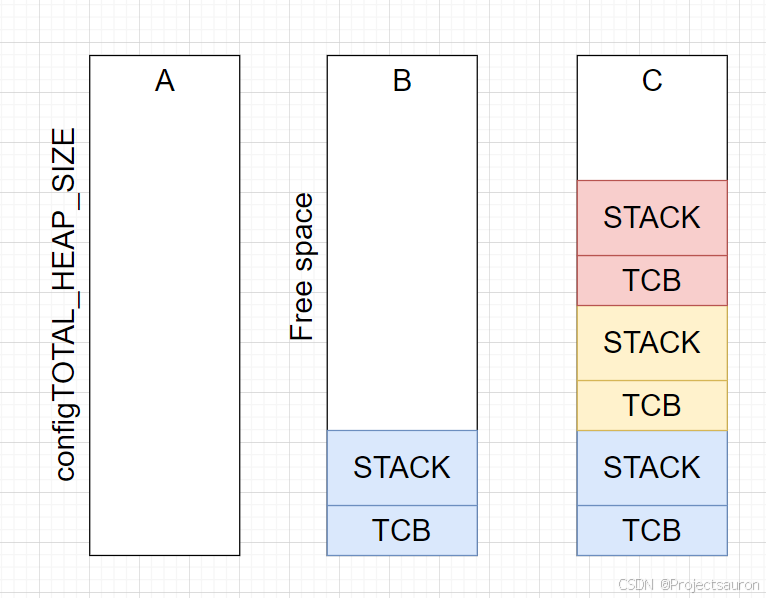
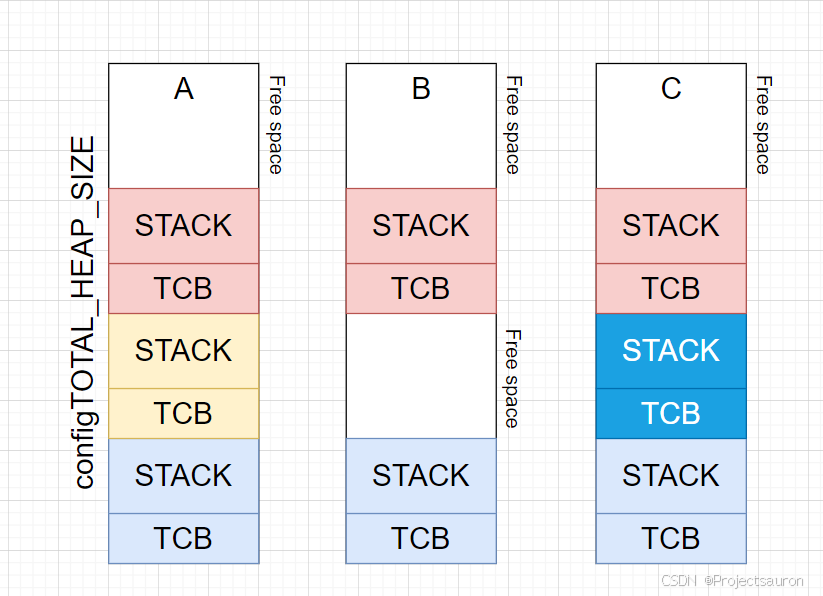
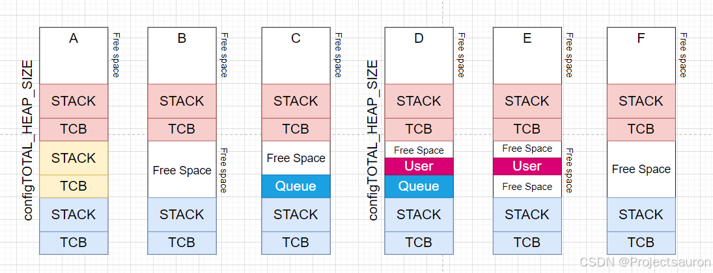
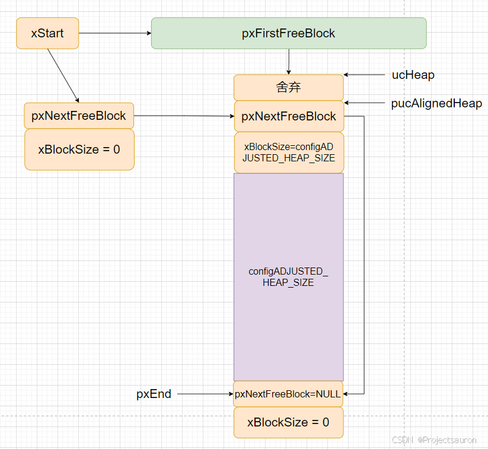
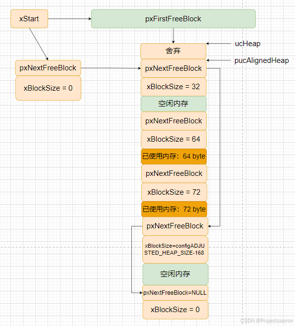
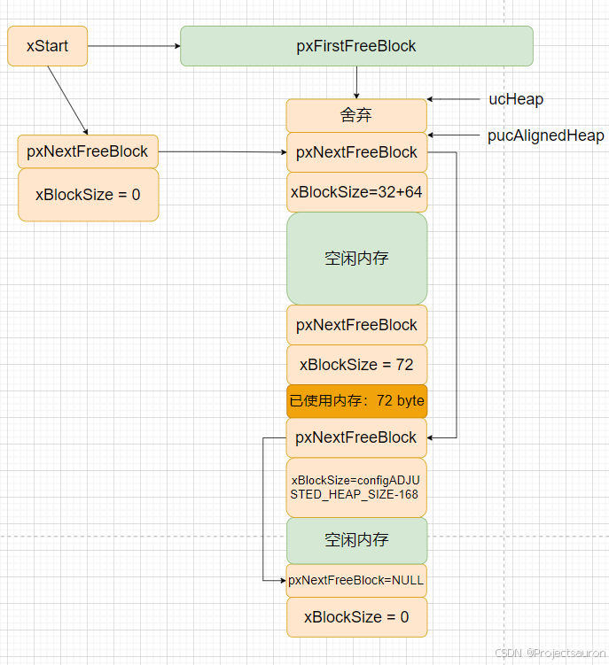

FreeRTOS 快速入门（二）之内存管理
[toc]
一、概述
在计算系统中，变量、中间数据一般存放在系统存储空间中，只有在实际使用时才将 它们从存储空间调入到中央处理器内部进行运算。通常存储空间可以分为两种：内部存储 空间和外部存储空间。内部存储空间访问速度比较快，能够按照变量地址随机地访问，也 就是我们通常所说的 RAM（随机存储器），或电脑的内存；而外部存储空间内所保存的内 容相对来说比较固定，即使掉电后数据也不会丢失，可以把它理解为电脑的硬盘。在这一 章中我们主要讨论内部存储空间（RAM）的管理——内存管理。
FreeRTOS 操作系统将内核与内存管理分开实现，操作系统内核仅规定了必要的内存管 理函数原型，而不关心这些内存管理函数是如何实现的，所以在 FreeRTOS 中提供了多种 内存分配算法（分配策略），但是上层接口（API）却是统一的。这样做可以增加系统的 灵活性：用户可以选择对自己更有利的内存管理策略，在不同的应用场合使用不同的内存 分配策略。
如果 FreeRTOS 对象是动态创建的，那么标准 C 库 malloc() 和 free() 函数有时可用于此目的，但是…它们在嵌入式系统上并不总是可用，占用了宝贵的代码空间，不是线程安全的，而且不是确定性的 （执行函数所需时间将因调用而异），所以更多的时候需要的不是一个替代的内存分配实现。
一个嵌入式/实时系统的 RAM 和定时要求可能与另一个非常不同，所以单一的 RAM 分配算法 将永远只适用于一个应用程序子集。
为了避免此问题，FreeRTOS 将内存分配 API 保留在其可移植层。 可移植层在实现核心 FreeRTOS 功能的源文件之外， 允许提供适合于正在开发的实时系统的特定应用程序实现。 当 FreeRTOS 内核需要 RAM 时，它不调用 malloc()，而是调用 pvPortMalloc()；释放 RAM 时， RTOS 内核调用 vPortFree()，而不是 free()。
FreeRTOS 提供了几种堆管理方案， 其复杂性和功能各不相同。 你也可以提供自己的堆实现， 甚至同时使用两个堆实现。 同时使用两个堆实现 允许将任务堆栈和其他 FreeRTOS 对象放置在 内部 RAM 中，并将应用程序数据放置在较慢的外部 RAM 中。
二、FreeRTOS 中管理内存的 5 种方法
前面已经提到，FreeRTOS 中内存管理的接口函数为：pvPortMalloc 、vPortFree，对应于 C 库的 malloc、free。文件在 FreeRTOS/Source/portable/MemMang 下，它也是放在 portable 目录下，表示你可以提供自己的函数。
| 文件 | 优点 | 缺点 |
|---|---|---|
heap_1.c |
分配简单，时间确定 | 只分配、不回收 |
heap_2.c |
动态分配、最佳匹配 | 碎片、时间不定 |
heap_3.c |
调用标准库函数 | 速度慢、时间不定 |
heap_4.c |
相邻空闲内存可合并 | 可解决碎片问题、时间不定 |
heap_5.c |
在 heap_4 基础上支持分隔的内存块 | 可解决碎片问题、时间不定 |
1、Heap_1
它只实现了 pvPortMalloc，没有实现 vPortFree。如果你的程序不需要删除内核对象，那么可以使用 heap_1：
- 实现最简单
- 没有碎片问题
- 一些要求非常严格的系统里，不允许使用动态内存，就可以使用
heap_1
如果您的应用程序从未删除任务、队列、信号量、互斥锁等，则可以使用（这实际上涵盖了使用 FreeRTOS 的大多数应用程序）。始终具有确定性（总是需要相同的时间来执行），不会导致内存碎片化。非常简单，且从静态分配的数组分配内存， 这意味着它通常适合用于不允许真实动态内存分配的应用程序 。
它的实现原理很简单，首先定义一个大数组：
1 | /* Allocate the memory for the heap. */ |
然后，对于 pvPortMalloc 调用时，从这个数组中分配空间。
FreeRTOS 在创建任务时，需要 2 个内核对象：task control block(TCB)、stack。
使用 heap_1 时，内存分配过程如下图所示：
- A：创建任务之前整个数组都是空闲的
- B：创建第 1 个任务之后，蓝色区域被分配出去了
- C：创建 3 个任务之后的数组使用情况

2、Heap_2
Heap_2 之所以还保留，只是为了兼容以前的代码。新设计中不再推荐使用 Heap_2。建议使用 Heap_4 来替代 Heap_2，更加高效。
Heap_2 也是在数组上分配内存，跟 Heap_1 不一样的地方在于：
Heap_2使用最佳匹配算法（best fit）来分配内存- 它支持
vPortFree
最佳匹配算法：
- 假设 heap 有 3 块空闲内存：5 字节、25 字节、100 字节
pvPortMalloc想申请 20 字节- 找出最小的、能满足
pvPortMalloc的内存：25 字节- 把它划分为 20 字节、5 字节
- 返回这 20 字节的地址
- 剩下的 5 字节仍然是空闲状态，留给后续的
pvPortMalloc使用
与 Heap_4 相比，Heap_2 不会合并相邻的空闲内存，所以 Heap_2 会导致严重的”碎片化”问题。虽然不再推荐使用 Heap_2，但是它的效率还是远高于 malloc、free。
如果应用程序动态地创建和删除任务， 且分配给正在创建任务的堆栈大小总是相同的 ， 那么 heap2.c 可以在大多数情况下使用。 但是， 如果分配给正在创建任务的堆栈的大小不是总相同， 那么可用的空闲内存可能会被碎片化成许多小块 ， 最终导致分配失败。 在这种情况下，heap_4.c 是更好的选择。
应用程序直接调用 pvPortMalloc() 和 vPortFree()， 而不是仅通过其他 FreeRTOS API 函数间接调用。
如果您应用程序的队列、任务、信号量、互斥锁等的顺序不可预测， 可能会导致内存碎片化。 这对几乎所有的应用程序来说都是不可能的， 但应牢记这一点。非确定性，但比大多数标准 C 库 malloc 实现更有效。
使用 heap_2 时，内存分配过程如下图所示：
- A：创建了 3 个任务
- B：删除了一个任务，空闲内存有 3 部分：顶层的、被删除任务的 TCB 空间、被删除任务的 Stack 空间
- C：创建了一个新任务，因为 TCB、栈大小跟前面被删除任务的 TCB、栈大小一致，所以刚好分配到原来的内存

3、Heap_3
Heap_3 使用标准 C 库里的 malloc、free 函数，所以堆大小由链接器的配置决定，配置项 configTOTAL_HEAP_SIZE 不再起作用。
C 库里的 malloc、free 函数并非线程安全的，Heap_3 中先暂停 FreeRTOS 的调度器，再去调用这些函数，使用这种方法实现了线程安全。
使用 Heap_3 时需要链接器设置堆，需要编译器库提供 malloc() 和 free() 实现。不具有确定性，能会大大增加 RTOS 内核代码大小。
请注意，使用
heap_3时，FreeRTOSConfig.h中的configTOTAL_HEAP_SIZE设置无效 。
4、Heap_4
Heap_4 使用首次适应算法（first fit）来分配内存。它还会把相邻的空闲内存合并为一个更大的空闲内存，这有助于较少内存的碎片问题。
首次适应算法：
- 假设堆中有 3 块空闲内存：5 字节、200 字节、100 字节
- pvPortMalloc 想申请 20 字节
- 找出第 1 个能满足
pvPortMalloc的内存：200 字节- 把它划分为 20 字节、180 字节
- 返回这 20 字节的地址
- 剩下的 180 字节仍然是空闲状态，留给后续的
pvPortMalloc使用
Heap_4 会把相邻空闲内存合并为一个大的空闲内存，可以较少内存的碎片化问题。适用于这种场景：频繁地分配、释放不同大小的内存。
可用堆空间的总量通过 configTOTAL_HEAP_SIZE（定义于 FreeRTOSConfig.h 中）设置。 提供了 configAPPLICATION_ALLOCATED_HEAP（在 FreeRTOSConfig.h 配置宏）， 以允许将堆放置在内存中的特定地址。
xPortGetFreeHeapSize() 函数被调用时返回未分配的堆空间总量， xPortGetMinimumEverFreeHeapSize() 函数返回 FreeRTOS 应用程序启动的系统中已存在的最小空闲堆空间量。 这两个函数都没有提供关于未分配的 内存如何碎片化为小块的信息。
vPortGetHeapStats() 函数提供了其他信息。 它填充了一个 heap_t 结构体的成员，如下所示。
1 | /* Prototype of the vPortGetHeapStats() function. */ |
Heap_4 的使用过程举例如下：
- A：创建了 3 个任务
- B：删除了一个任务，空闲内存有 2 部分：
- 顶层的
- 被删除任务的 TCB 空间、被删除任务的 Stack 空间合并起来的
- C：分配了一个 Queue，从第 1 个空闲块中分配空间
- D：分配了一个 User 数据，从 Queue 之后的空闲块中分配
- E：释放的 Queue，User 前后都有一块空闲内存
- F：释放了 User 数据，User 前后的内存、User 本身占据的内存，合并为一个大的空闲内存

与 heap_2 实现相比，导致堆空间严重碎片化成多个小块的可能性更小（即使正在分配和释放的内存是随机大小）。不具有确定性，但比大多数标准 C 库 malloc 实现更有效。
heap_4.c 对于想在应用程序代码中直接使用可移植层内存分配方案的应用程序特别有用 （而不是 通过调用函数 pvPortMalloc() 和 vPortFree() 来间接使用)。
Heap_4 执行的时间是不确定的，但是它的效率高于标准库的 malloc、free。
4.1 内存申请
heap_4.c 方案的内存申请函数与 heap_2.c 方案的内存申请函数大同小异，同样是从链表头 xStart 开始遍历查找合适的内存块，如果某个空闲内存块的大小能容得下用户要申请的内存，则将这块内存取出用户需要内存空间大小的部分返回给用户，剩下的内存块组成 一个新的空闲块，按照空闲内存块起始地址大小顺序插入到空闲块链表中，内存地址小的在前，内存地址大的在后。
在插入到空闲内存块链表的过程中，系统还会执行合并算法将 地址相邻的内存块进行合并：判断这个空闲内存块是相邻的空闲内存块合并成一个大内存 块，如果可以则合并，合并算法是 heap_4.c 内存管理方案和 heap_2.c 内存管理方案最大的不同之处，这样一来，会导致的内存碎片就会大大减少，内存管理方案适用性就很强，能 一样随机申请和释放内存的应用中，灵活性得到大大的提高，heap_4.c 内存初始化的源码和完成示意图具体见下图。
1 | void *pvPortMalloc( size_t xWantedSize ) |

4.2 内存释放
heap_4.c 内存管理方案的内存释放函数 vPortFree() 也比较简单，根据传入要释放的内存块地址，偏移之后找到链表节点，然后将这个内存块插入到空闲内存块链表中，在内存块插入过程中会执行合并算法，这个我们已经在内存申请中讲过了（而且合并算法多用于释放内存中）。最后是将这个内存块标志为“空闲”（内存块节点的 xBlockSize 成员变量最高位清 0）、再更新未分配的内存堆大小即可，下面是 vPortFree 的源码实现和示意图。
1 | void vPortFree( void *pv ) |
调用 prvInsertBlockIntoFreeList() 函数将释放的内存块添加到空闲内存块链表中，在这过程中，如果内存块可以合并就会进行内存块合并，否则就单纯插入空闲内存块链表（按内存地址排序）。 按照内存释放的过程，当我们释放一个内存时，如果与它相邻的内存块都不是空闲的， 那么该内存块并不会合并，只会被添加到空闲内存块链表中；而如果某个时间段释放了另一个内存块，发现该内存块前面有一个空闲内存块与它在地址上是连续的，那么这两个内存块会合并成一个大的内存块，并插入空闲内存块链表 中。整个过程示意图具体见下图：
下图是释放一个无法合并的内存块：

下图是释放一个可以合并的内存块：

5、Heap_5
Heap_5 分配内存、释放内存的算法跟 Heap_4 是一样的。相比于 Heap_4，Heap_5 并不局限于管理一个大数组：它可以管理多块、分隔开的内存。
在嵌入式系统中，内存的地址可能并不连续，这种场景下可以使用 Heap_5。既然内存时分隔开的，那么就需要进行初始化：确定这些内存块在哪、多大：
- 在使用
pvPortMalloc之前，必须先指定内存块的信息 - 使用
vPortDefineHeapRegions来指定这些信息
1 | typedef struct HeapRegion |
使用一个 HeapRegion_t 数组可以指定多块地址，在这个数组中，低地址在前、高地址在后。比如：
1 | HeapRegion_t xHeapRegions[] = |
vPortDefineHeapRegions 函数原型如下：
1 | void vPortDefineHeapRegions( const HeapRegion_t * const pxHeapRegions ); |
把 xHeapRegions 数组传给 vPortDefineHeapRegions 函数，即可初始化 Heap_5。
三、Heap 相关的函数
1、pvPortMalloc/vPortFree
函数原型：
1 | void * pvPortMalloc( size_t xWantedSize ); |
作用：分配内存、释放内存。如果分配内存不成功，则返回值为 NULL。
2、xPortGetFreeHeapSize
函数原型：
1 | size_t xPortGetFreeHeapSize( void ); |
当前还有多少空闲内存，这函数可以用来优化内存的使用情况。比如当所有内核对象都分配好后，执行此函数返回 2000，那么 configTOTAL_HEAP_SIZE 就可减小 2000。
注意：在
heap_3中无法使用。
3、xPortGetMinimumEverFreeHeapSize
函数原型：
1 | size_t xPortGetMinimumEverFreeHeapSize( void ); |
返回：程序运行过程中，空闲内存容量的最小值。
注意：只有
heap_4、heap_5支持此函数。
4、malloc 失败的钩子函数
在 pvPortMalloc 函数内部：
1 | void * pvPortMalloc( size_t xWantedSize )vPortDefineHeapRegions |
所以，如果想使用这个钩子函数，需要注意以下几点：
- 在
FreeRTOSConfig.h中，把configUSE_MALLOC_FAILED_HOOK定义为 1 - 提供
vApplicationMallocFailedHook函数 pvPortMalloc失败时，才会调用此函数